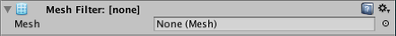
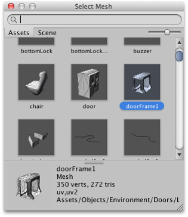
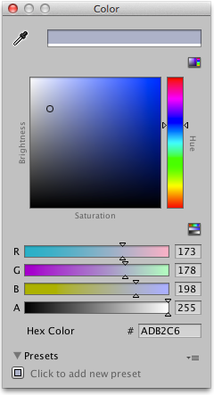
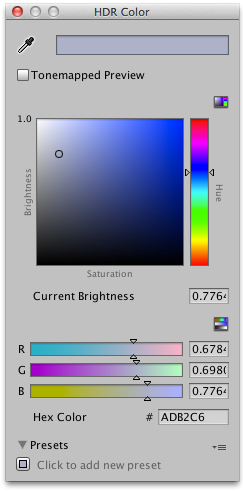
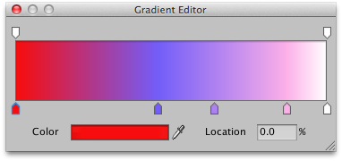
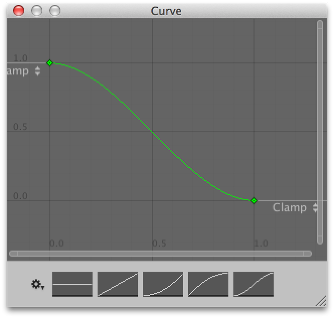

Editing Properties
Properties are settings and options for components that can be edited in the inspector.

Properties can be broadly categorized as references (links to other objects and assets) or values (numbers, checkboxes, colors, etc).
References
References can be assigned by dragging and dropping an object or asset of the appropriate type to the property in the inspector. For example, the Mesh Filter component needs to refer to a Mesh asset somewhere in the project. When the component is initially created, the reference is unassigned:

...but you can assign a Mesh to it by dropping a Mesh asset onto it:

You can also use the Object Picker to select an object for a reference property. If you click the small circle icon to the right of the property in the inspector, you will see a window like this:

The object picker lets you search for and select objects within the scene or project assets (the information panel at the bottom of the window can be raised and lowered as desired). Choosing an object for the reference property is simply a matter of double clicking it in the picker.
When a reference property is of a component type (such as Transform), you can drop any object onto it; Unity will locate the first component of that type on the object and assign it to the reference. If the object doesn't have any components of the right type, the assignment will be rejected.
Values
Most values are edited using familiar text boxes, checkboxes and menus, depending on their type (as a convenience, numeric values can also be moved up or down by dragging the mouse over the property name label). However, there are some values of more complex types that have their own specific editors. These are described below.
Colors
Color properties open the Color Picker when clicked.



Unity uses its own color picker but on Mac OS X you can choose to use the system picker from the Preferences (menu: Unity > Preferences and then Use OS X Color Picker from the General panel).
Gradients
In graphics and animation, it is often useful to be able to blend one colour gradually into another, over space or time. A gradient is a visual representation of a colour progression, which simply shows the main colours (which are called stops) and all the intermediate shades between them:

The upward-pointing arrows along the bottom of the gradient bar denote the stops. You can select a stop by clicking on it; its value will be shown in the Color box which will open the standard colour picker when clicked. A new stop can be created by clicking just underneath the gradient bar. The position of any of the stops can be changed simply by clicking and dragging and a stop can be removed with ctrl/cmd + delete.
The downward-pointing arrows above the gradient bar are also stops but they correspond to the alpha (transparency) of the gradient at that point. By default, there are two stops set to 100% alpha (ie, fully opaque) but any number of stops can be added and edited in much the same way as the colour stops.
Curves
A Curve is a line graph that shows the response (on the Y axis) to the varying value of an input (on the X axis).

Curves are used in a variety of different contexts within Unity, especially in animation, and have a number of different options and tools. These are explained on the Editing Curves page of the manual.
Arrays
When a script exposes an array as a public variable, the inspector will show a value editor that lets you edit both the size of the array and the values or references within it.

When you decrease the Size property, values from the end of the array will be removed. When you increase the size, the current last value will be copied into all the new elements added. This can be useful when setting up an array whose values are mostly the same - you can set the first element and then change the size to copy it to all the other elements.
Editing Several Objects at Once
When you have two or more objects selected, the components they have in common can all be edited together (ie, the values you supply will be copied to all the selected objects).

Where property values are the same for all selected objects, the value will be shown but otherwise, it will be shown as a dash character. Only components that are common to all objects will be visible in the inspector. If any selected object has components that are not present on other objects, the inspector will show a message to say that some components are hidden. The context menu for a property (opened by right-clicking on its name label) also has options to allow you to set its value from any of the selected components.
Note that you can also edit several selected instances of a prefab at once but the usual Select, Revert and Apply buttons will not be available.